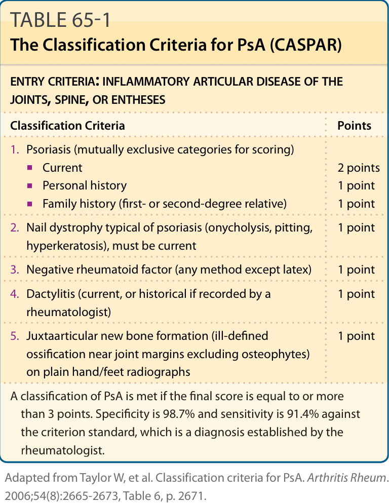
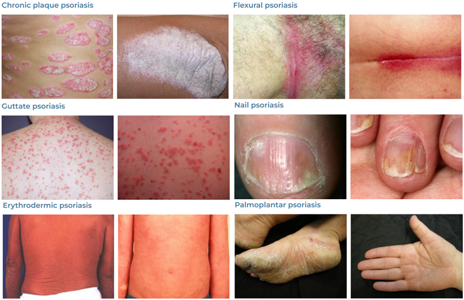

乾癬
2025年2月16日
上午 11:21
- 機轉：慢性反覆發作之皮膚病
- 角質細胞的細胞週期縮短(由原來的311小時縮短為36小時)，造成棘皮層增生 (acanthosis)，表皮增生為正常的28倍
- 同時由於第一型輔助型T細胞(Th1)免疫反應，在真皮產生了發炎現象，許多發炎細胞圍繞在表皮和真皮血管周圍，在顯微鏡下可見其形成的微小膿疱(稱Munro's microabscess)
- 流行病學
- 發病期分別為23歲和55歲兩個高峰期，越早發作症狀越嚴重且持續越久。台灣男性平均出現於35.5歲，而女性為30.4歲
- 男女發生率相等，少見於西非、日本人、北美南美印地安人和愛斯基摩人
- 越往赤道發生率越低(陽光越充足越不易乾癬)
- 遺傳性：
- 雙親其中一個有乾癬：小孩乾癬機率10%
- 雙親都有乾癬：小孩乾癬機率40%
- 基因型以HLA-Cw6確定最相關，其他如HLA-B13、B17、B27、Bw57也有相關
- 分類
- Type 1：好發在40歲前，與HLA 相關，有家族遺傳
- Type 2：好發40歲以後，且與HLA 無關
- 病因：多基因遺傳+Trigger factor
- 危險因子：
- 家族史
- 抽菸、肥胖
- 觸發因子：[口訣：TIDES]
- 外傷(Trauma)：Koebner phenomenon：外傷、抓搔皮膚會促進乾癬的增生，30-50%的病患有此現象
- 感染(Infection)：
- 急性滴狀乾癬(guttate psoriasis)：通常出現在急性鏈球菌(GAS)感染後1-2週
- HIV、S.aureus也與乾癬加劇相關
- 藥物(Drug)：會造成發病或惡化[口訣：ABCD+GI]
- 環境、壓力(Environment、Emotion)：約40%的病患會因壓力使乾癬惡化，小孩更高達90%
- 光照(Sunlight)：照光治療(UVB)為治療之一、但過度日曬反而會加劇乾癬
- 酒精：可能會誘發乾癬，但證據未明
- 好發位置：頭皮、軀幹(含腹股溝)、手肘、膝蓋、手掌/腳掌，多為對稱性
- Extensor side居多
- 臨床表現：
- 乾癬界線清楚明顯，表面有鬆散銀屑，皮屑下為滑亮均質之紅斑
- Auspitz sign：用機械性方式移去皮屑後會在紅色表皮上出現小血滴(真皮乳頭處擴張之小血管破裂)
- Koebner phenomenon=isomorphic phenomenon (同形現象)：外傷、抓搔皮膚會誘發乾癬形成與增生
- Psoriatic arthritis(10~25％)：有相當比例的乾癬會造成關節炎，與皮膚病灶嚴重度無關，可出現在皮膚上未出現乾癬的病患上。另外50%的病人手指甲及35% 病人的腳趾甲會被侵犯，產生指甲凹陷、黃斑、嚴重變形，常被誤認為黴菌感染
- Pencil-in-cup deformity
- 指甲表現：
- Psoriasis pitting：最常見的指甲病變，為甲板的凹陷，代表該段甲板生長過程中受到影響，反應了乾癬疾病的活躍程度，也與乾癬關節病變的嚴重程度有相關性
- Onycholysis：甲板與甲床分離，會由遠端發展至近端，可能會形成一個空間而發生眞菌感染。也可見於指甲受傷患者、免疫不全患者及甲狀腺疾者
- Subungual hyperkeratosis：甲床的角質細胞過度分化而形成角質堆積於甲板下方， 主要發生在腳趾甲
- Oil drop (salmon patch)：指甲觀察到一塊半透明黃紅色的病灶， 意即甲床發生乾蘚的皮膚病變。是乾癬的pathognomonic sign，有高度專一性
- 共病：增加以下疾病機率
- 心肌梗塞
- 中風
- 高血壓、糖尿病、血脂異常
- 肥胖、代謝症候群
- 診斷：
- 臨床亞型：
- 尋常性乾癬(Psoriasis vulgaris)：
- 最常見好發四肢伸側(手肘、膝蓋)和頭皮(特別是耳後)
- 界線清楚的紅斑+病灶處的脫屑
- 地圖狀(geographic)乾癬：融合成大塊如地圖板塊狀
- 反轉(inverse、flexural)乾癬：皮膚皺摺處，表面不脫屑而成光滑的紅斑
- 點滴狀乾癬(Guttate psoriasis)：
- 許多橙紅色(salmon pink)的點滴狀病灶出現在軀幹上部和四肢近端(直徑<1cm)
- 多見於年輕人和感染鏈球菌後發生
- 乾癬性紅皮症(Psoriatic erythroderma)：
- 突然全身皮膚發紅、大量脫屑
- 或由慢性尋常性乾癬慢慢進展成全身性脫屑性紅斑
- 全身膿疱型乾癬(Generalized pustular psoriasis, von Zumbusch)：
- 急性乾癬
- 突發性全身黃色無菌性的膿疱， 多合併持續性發燒
- 較嚴重時膿疱會融合而成更大圓形膿疱(circinate lesion, or lakes of pus )
- 膿疱型乾癬(Pustular psoriasis)：和HLA-B27高度相關
- 掌瓶膿疱症(Palmoplantar pustulosis)：在掌心及腳底產生反覆的膿疱
- 大多數和抽菸有關
- 連續性肢端皮膚炎(Acrodermatitis continua)：在指甲周圍化膿，甚至使指甲破壞消失
- 處置：
- 平日作息：
- 避免感染，避免外傷，勿用力搔抓皮膚或皮屑
- 停止引起乾癬藥物的使用
- 避免長期暴露在低溫、低濕度的環境
- 睡眠充足、保持情緒平穩
- 外用：
- 類固醇：TOPI 類固醇可抗發炎和抗增生，但無法使皮膚完全正常化
- Anthralin：目前國內停產，效果好且治癒後維持較久，無任何長期副作用，但皮膚刺激性較強
- tazarotene
- 維生素D：抑制角質細胞增生並促進其分化，並有抗發炎作用
- 焦油：此法治療乾癬已有很長的歷史，使用2〜5%的焦油作為輔助性治療，具輕度刺激性，長期無嚴重副作用
- 紫外線療法：
- 光化學療法(PUVA) : 口服Methoxypsoralen(P)+UVA照射
- 口服藥物1~2小時後開始照射，依皮膚反應而逐漸加量
- 一個禮拜兩到三次
- 大部份病人在治療19-25次之後病灶會漸消褪
- 副作用包括了噁心、頭暈和頭痛
- 浸泡式光化學療法(PUVA soaks)：利用泡澡將Methoxypsoralen送到皮膚
- 主要優點是沒有全身性的作用，如腸胃道不適
- 中波紫外線光療(UVB)：使用窄頻(narrow-band) 311nmUVB
- UVB在皮膚可抑制免疫細胞功能，減少白血球附著到微血管，誘使皮膚製造抗發炎的物質
- 全身性治療：後線治療
- Methotrexate (MTX)：慢性塊狀乾癬或乾癬性關節炎的第一線用藥
- 最常見的副作用：噁心、疲倦、食慾減退、骨髓抑制造成白血球下降
- 肝毒性：有肝病史和酗酒不適合，可能引發肝纖維化或肝硬化的危險
- 環袍黴素(cyclosporine)：
- 主要治其他治療無效或乾癬性紅皮症可快速達到療效，不適合長期使用
- 給予低劑量(< 5 mg/kg/day)時， 約對70%的慢性板塊狀乾癬有效
- 主要副作用：高血壓、高血脂、多毛症、牙皺增生、不可逆腎功能損害
- 口服A酸：對全身膿疱型及掌號膿疱症效果好，但對於其他類型乾癬單 獨使用效果不佳，故須搭配光照療法
- 生物製劑：
- Infliximab、Adalimumab：TNF單株抗體
- Etanercept：TNF-α受體融合蛋白
- Ustekinumab：針對IL-12和IL-23的單株抗體
- Alefacep：作用於 CD2
 相關條目：關節炎
相關條目：關節炎



 勿使用PO 類固醇：因使用一段時間後停藥會rebound
phenomenon，造成全身性膿疱型乾癬
勿使用PO 類固醇：因使用一段時間後停藥會rebound
phenomenon，造成全身性膿疱型乾癬